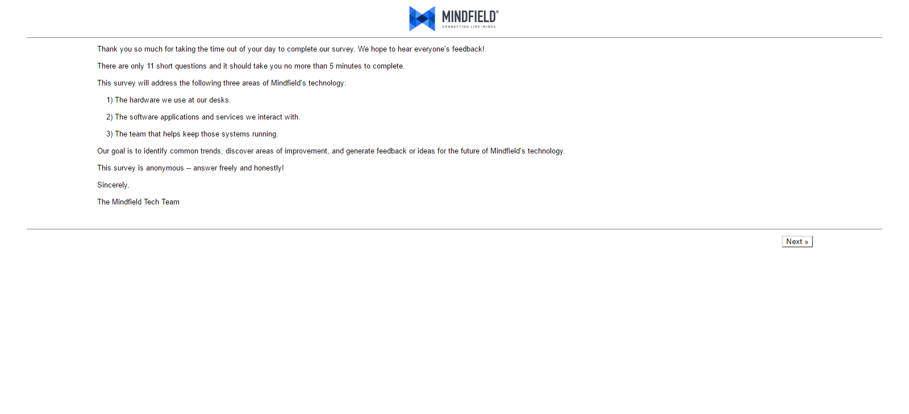
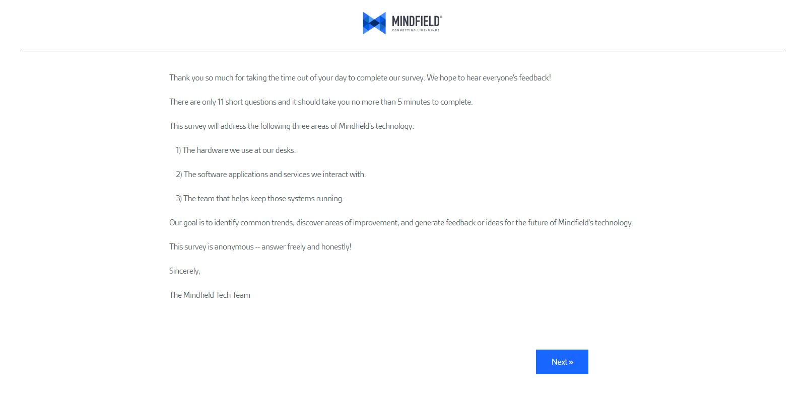
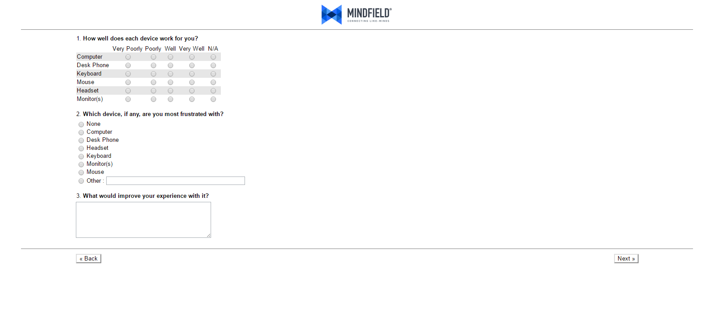
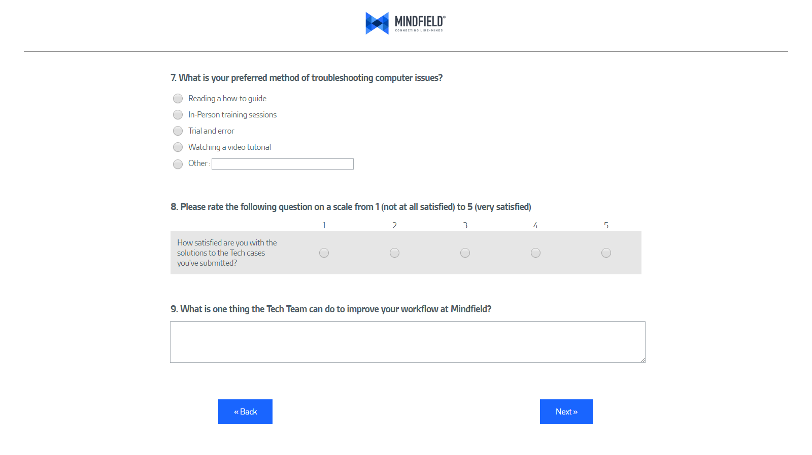
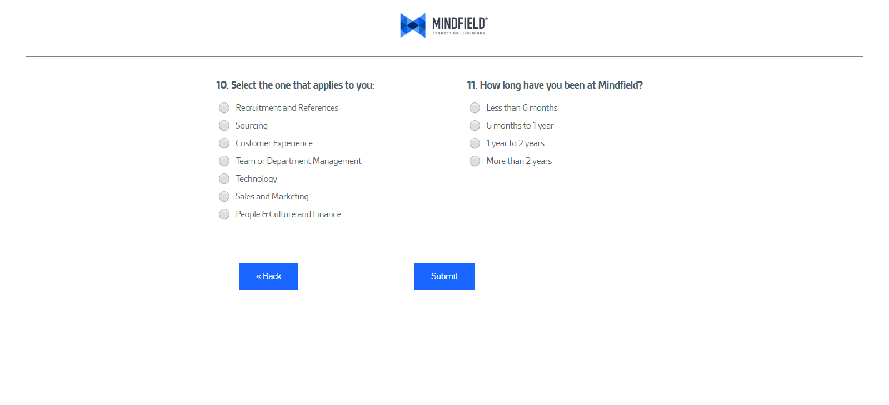

Mindfield Survey Design
Redesigned the client satisfaction and technology use surveys with HTML and CSS.
Background
This project involved editing HTML and CSS in Callidus Clicktools, a survey application built with Salesforce.
The goal was to improve the client and employee experience by changing the default typography and styling.
Changes were made by manipulating CSS in the DOM inspector and committing changes in Callidus Clicktools.
Before
After
Line spacing was increased to improve readability.
Font was changed to be brand consistent.
Button styling changed to be easier touch target on mobile, with brand consistent colours.
Text margins increased to better align content.
Before
After

Increased font size for readability.
Increased size of selection options. Increased padding on table rows.
Centered content for visual consistency.
Brought buttons closer for easier navigation.
Before

After
Increased font size for readability.
Increased size of selection options. Increased padding on table rows.
Centered content for visual consistency.
Brought buttons closer for easier navigation.
Before

After
Increased font size for readability.
Increased size of selection options.
Added padding for better spacing.
That's it!
Just a simple project that improved usability.
Contact Me
I'm currently looking for Junior UX/UI design positions or internships. 👔